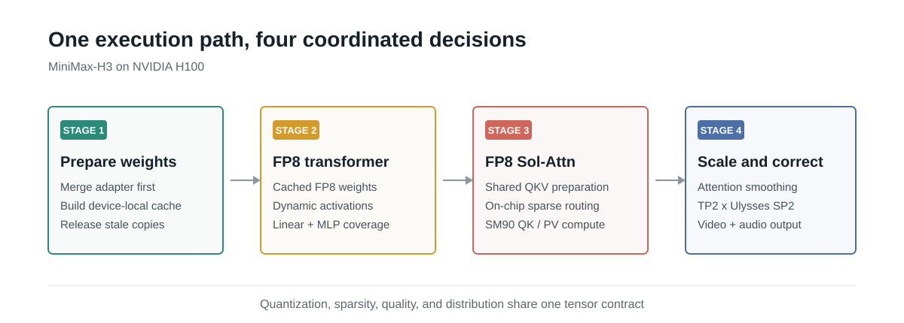
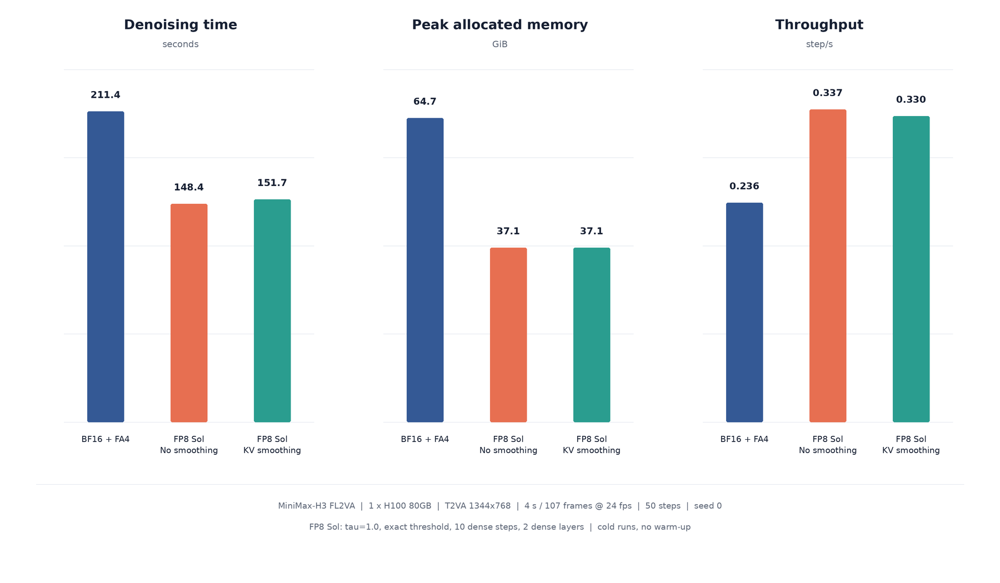

Back to the modular repository index
Fast and Faithful MiniMax-H3 Inference on H100
Making FP8, sparse attention, adapters, and multi-GPU execution work as one system
MiniMax-H3 is a useful stress test for efficient AI systems. A single diffusion transformer produces a high-resolution video together with synchronized audio. The model must preserve appearance, motion, temporal reasoning, speech, and event-aligned sound across many denoising updates. Those requirements are what make the output compelling, and also what make inference expensive.
The obvious remedies attack different parts of the workload. FP8 reduces the cost of the large projections and feed-forward layers. Sparse attention avoids evaluating token pairs that contribute little to the output. Sequence parallelism divides a long multimodal sequence across GPUs. Distilled adapters reduce the number of transformer evaluations.
The difficult part is not enabling those features one at a time. It is keeping them useful when they meet.
A generic quantization wrapper may support Linear layers but not sparse QK/PV attention. A sparse kernel may assume BF16 inputs or a layout that forces Q, K, and V to be converted and quantized again. A statistic computed before sequence-parallel redistribution describes the wrong tensor. An adapter merged after FP8 caching leaves the cache representing the base model rather than the model the user requested. Each mistake is local; their effects accumulate through the denoising trajectory.
This is the systems problem we addressed in TeleFuser. The resulting MiniMax-H3 path combines:
- cached FP8 Linear weights and dynamic FP8 activations;
- an H100-native FP8 Sol-Attn kernel with online sparse routing;
- attention smoothing and selective dense work to stabilize quality;
- Ulysses sequence parallelism, tensor parallelism, and communication overlap;
- base, Turbo LoRA, and FastH3-style adapter loading before quantization.
The rest of this post follows the order in which those constraints arise. We first explain why FP8 and sparsity cannot be composed as independent switches. We then follow one attention tensor through the H100 execution path, add the quality controls demanded by that approximation, and finally distribute the same semantics across GPUs. The evaluation separates operator-level diagnosis from the result that can be compared honestly: a matched denoising comparison against another maintained MiniMax-H3 runtime, a separately scoped multi-GPU validation, and the generated video and audio available to inspect.
The goal is not a collection of isolated kernel wins. It is a faster MiniMax-H3 request whose output remains worth generating.
One Model, Two Bottlenecks
Most of MiniMax-H3’s denoising time sits in a large DiT, but “optimize the DiT” is not one operation. Its dense projections and MLPs are dominated by matrix multiplication. Its attention cost grows with the number of visual, audio, and conditioning tokens. Making only the GEMMs cheaper leaves the token-pair work; making only attention sparse leaves most model weights and activations in BF16.
That is why FP8 and sparse attention are complementary:
| Technique | Reduces | Does not reduce |
|---|---|---|
| FP8 Linear | weight traffic and dense GEMM cost | the number of attention pairs |
| FP8 attention | QK/PV precision and bandwidth | dense attention’s pair count |
| Sol-Attn | selected attention blocks | projection and MLP cost |
| Ulysses SP | per-rank sequence work and state | total work or communication |
The table looks modular. The actual tensors are not.
Consider the QKV path. The projection output is normalized, rotary position embedding changes Q and K, sequence parallelism redistributes heads and sequence shards, and sparse attention consumes a tiled layout plus routing metadata. If a framework quantizes at every feature boundary, one attention call can take the following route:
FP8 Linear output
-> BF16 normalization and RoPE
-> per-rank Q/K/V quantization
-> Ulysses all-to-all
-> layout conversion
-> sparse kernel quantization
-> attention
The repeated conversion costs time, but the semantic problem is worse. Per-tensor means and scales derived before all-to-all describe a sequence shard. After redistribution, each rank owns different local heads over the complete sequence. The scale is now attached to a tensor it did not summarize. A path can therefore be individually “correct” at every API boundary and still be numerically inconsistent as a system.
The hardware boundary is part of the design
H100 makes this composition problem concrete. Hopper tensor cores support useful FP8 execution, but a framework-level FP8 label does not provide every kernel needed by MiniMax-H3. Linear libraries, dense attention, sparse attention, routing, and fused output correction have different shape and layout requirements. Newer MXFP8 and NVFP4 recipes can also depend on Blackwell-specific hardware paths; their existence does not make them an SM90 solution.
We therefore use the quantization boundary as an architectural boundary. Sensitive transforms stay in higher precision. Q, K, and V are quantized only after they have their final per-rank attention semantics, and their scales are passed directly to the consumer kernel. Sparse routing and FP8 QK/PV are owned by the same H100 implementation.
This decision narrows the interface between features. It also creates a new question: once low precision and sparsity perturb the same attention result, how do we keep that combined approximation from steering the diffusion trajectory away from a useful video?
Building the H100 Execution Path

The optimized request begins before the first token reaches attention. It starts by defining which model is actually being executed.
Prepare the effective weights
MiniMax-H3 can run as the base model or with a released Turbo or FastH3-style adapter. An adapter is part of the model identity, not a post-processing effect. TeleFuser loads the base checkpoint on CPU, applies low-rank and dense adapter deltas in higher precision, and only then creates FP8 weight caches.
The order is:
base BF16 weights
-> merge the selected adapter
-> quantize the effective weight
-> build the device-local FP8 cache
-> release superseded storage
Reversing the middle two operations would run stale base-model weights. Keeping both copies after the merge would make an FP8 model look artificially large in peak-memory measurements.
Multi-process execution adds another constraint. CUDA tensors created in a
parent process cannot be inherited safely by workers started with
multiprocessing.spawn. TeleFuser therefore starts multi-GPU MiniMax-H3 from
CPU weights and materializes each FP8 cache lazily inside the worker that owns
the target GPU. The Python module that exposes the external kernel is resolved
at runtime rather than stored inside every FP8Linear object, so the model
configuration remains pickleable during worker launch.
Keep dense transformer work in FP8
The dominant projections and MLPs use cached FP8 weights with dynamically quantized activations. Higher-precision source weights are preparation state, not part of the steady-state data path. This distinction matters when reporting memory: parameter compression is real, but the end-to-end peak also includes text encoding, VAE state, activations, communication buffers, CUDA workspaces, and allocator reservations. FP8 should not be advertised as “half the total GPU memory” unless all those components are also halved.
Quantize QKV where the kernel can consume it
Q/K normalization and rotary embedding remain in higher precision because their reductions and phase transforms are sensitive. After Ulysses redistribution, Q, K, and V have their final local-head/full-sequence meaning. TeleFuser prepares them jointly, producing FP8 tensors and scale metadata in the layout expected by Sol-Attn.
The custom SM90 kernel then owns the complete sparse attention operation:
- summarize candidate key blocks and select them online;
- execute the selected QK tiles in FP8;
- apply the sparse softmax path and correction terms;
- execute the selected probability-value tiles;
- write the corrected output once.
TMA moves tiled data while WGMMA executes tensor-core matrix operations. More important than the instruction names, the kernel avoids bouncing through generic attention formats between routing and compute. Dense-prefix replacement and sparse-output correction are merged into the same output pass, so enabling quality controls does not require writing and rereading a full attention tensor.
Unsupported shapes retain a validated fallback. Hardware specialization is useful only when it fails explicitly; silently accepting an untested shape is not portability.
This path solves the execution problem, but it also compounds two approximations. The next step is to make the kernel preserve the attention statistics that later denoising blocks expect.
Stabilizing the Approximation, Then Scaling It
Diffusion inference repeatedly feeds model predictions into the next update. An error that looks small at one attention boundary can reappear as texture flicker, unstable motion, or audio drift several updates later. FP8 rounding and sparse routing perturb the same recurrent trajectory, so quality has to be controlled before distribution makes the path harder to inspect.
Attention smoothing is numerical conditioning
Profiles of real MiniMax-H3 QKV captures showed that the key and value distributions were not always centered around zero. Symmetric FP8 quantization has no integer-style zero point to subtract at inference; it represents zero exactly and uses a scale around zero. A non-zero tensor mean therefore spends part of the available dynamic range representing an offset rather than useful variation.
We exploit two attention identities:
mu_k = K.mean(dim=sequence)
K_centered = K - mu_k
# Every logit in a query row moves by the same constant.
# Softmax cancels that constant exactly in real arithmetic.
softmax(Q @ K_centered.T) == softmax(Q @ K.T)
mu_v = V.mean(dim=sequence)
V_centered = V - mu_v
# Attention probabilities sum to one along the key sequence.
attention(Q, K, V) == attention(Q, K, V_centered) + mu_v
V_fp8, v_scale = quantize_fp8(V_centered)
rounding_mean = effective_sequence_mean(V_fp8, v_scale)
output_correction = mu_v - rounding_mean
K and V are centered before FP8 conversion. K needs no restoration because softmax is shift-invariant. V’s sequence mean is added to the attention output, where the identity says it belongs. FP8 rounding can introduce a much smaller mean into the centered V, so the correction subtracts that effective per-head/channel mean as well.
The runtime kernel consumes FP8 V and its scale directly; it does not materialize a separate BF16 “reconstructed V.” The effective mean is reduced from the FP8 representation and scale. Dequantized-V statistics are therefore only an analytical proxy, while output error at the real attention boundary is the stronger measurement.
This is attention-specific smoothing, not offline SmoothQuant. It does not move activation scale into weights, calibrate a dataset, or change the trained model. It changes the representation seen by the quantizer while preserving the corresponding high-precision attention operation.
The first implementation exposed the cost of doing this as separate tensor passes. On one H100, an unfused version added about 11.7% denoising time over unsmoothed FP8 Sol-Attn. Folding centering and V restoration into the QKV preparation/output path reduced that penalty to 2.2%. In the refined path, KV smoothing and V correction are enabled by default, so the standard MiniMax-H3 example does not need a quality-only collection of command-line flags.
A real MiniMax-H3 layer, not a synthetic distribution
To check that the argument matched the model, we captured post-QK-norm,
post-RoPE Q/K/V from the first active Sol layer. The tensor shape was
(1, 32,626, 56, 128); the measurement covered four heads over the complete
32,626-token context and used 64 evenly spaced queries for FP32 dense-attention
reference math.
Centering reduced K quantization MSE from 9.380e-4 to 7.349e-4
(-21.65%). More importantly, dense attention-output MSE fell from
7.034e-4 to 6.459e-4 (-8.18%), while output SQNR rose from 29.23 to
29.60 dB. Q was unchanged. These are boundary diagnostics, not perceptual
scores, but they verify the mechanism on tensors the model actually produced.
The end-to-end ablation used one H100, 50 denoising steps, 1344 x 768 output, 107 frames, and the same prompt and seed. Smoothed FP8 Sol retained a 39.4% denoising-throughput advantage over BF16 Linear + FlashAttention 4 and reduced peak allocated memory by 42.6%. Against unsmoothed FP8 Sol, the final fused smoothing path cost 2.1% throughput with no change in peak allocated memory.

Smoothing improved every reported video trajectory metric for this sample: frame cosine moved from 0.87488 to 0.87729, PSNR from 14.695 to 14.800 dB, and mean SSIM from 0.5464 to 0.5659. The audio metrics were mixed: the unsmoothed trajectory was slightly closer to BF16 under the measured waveform and spectral distances. We therefore claim a video improvement for this case, not a universal audio improvement. Same-seed metrics are regression signals; they do not say that one plausible diffusion sample is aesthetically superior.
The original synchronized outputs are embedded below so the numerical evidence can be checked against motion, appearance, and sound.
Sparse attention still needs dense islands
Smoothing protects precision; it does not decide which attention blocks may be skipped. Early denoising updates establish global structure, and a small set of layers can be more sensitive to missing long-range interactions. TeleFuser keeps an explicit dense prefix and allows selected layers to stay dense before Sol-Attn handles the remaining work.
This is not a claim that the first update is universally special. It is a
controlled policy surface: dense steps, dense layers, threshold type, and
tau are recorded with each result. For the FastH3 adapter profile evaluated
below, two opening updates are dense and later updates use the validated Sol
threshold. The output pass combines the dense-prefix replacement with the
sparse correction rather than launching separate full-tensor repair work.
Statistics must be computed after redistribution
Once smoothing is correct on one GPU, Ulysses introduces a simple but critical ordering rule. Before all-to-all, each rank sees a sequence shard containing all heads. After all-to-all, it sees its local heads over the complete sequence. A key/value mean computed before redistribution is therefore not the mean required by attention on that rank.
TeleFuser communicates QKV first, then performs the joint attention
preparation. That preserves the same centering and scaling semantics as the
single-GPU path. Ulysses reduces the local long-sequence attention problem,
while tensor parallelism can split the wide Linear/MLP work on a four-GPU
deployment. The topology is selected to match the workload: two GPUs use
TP1 x Ulysses SP2; four GPUs use TP2 x Ulysses SP2.
Communication can otherwise replace the compute that FP8 and sparsity removed. The distributed attention path therefore supports overlapping Ulysses communication with attention computation. This capability was refined in subsequent TeleFuser work; at the community-blog level, the important point is that scaling is part of the operator schedule rather than a wrapper placed around a single-GPU kernel.
The result is one semantic path across precision, sparsity, adapters, and parallel execution. We can now ask the only useful performance question: against a maintained external MiniMax-H3 implementation, what does the matched denoising region cost, what changes under multi-GPU execution, and is the generated artifact still valid?
What the Complete Path Actually Buys
An external baseline is more useful than comparing TeleFuser with another TeleFuser flag. We therefore use FastVideo’s MiniMax-H3 FastH3 Dense/Data-Free adapter path as the primary reference. Both outputs use one H100 80GB, the same base checkpoint and adapter at strength 1.0, the same fox prompt and seed 1000, 1344 x 768 resolution, 124 frames at 24 FPS, and five scheduler sigma points, which execute four DiT forwards. Each profile ran one full warm-up and three measured generations.
FastVideo uses BF16 Linear and FlashAttention 4. Its H100 checkout discards the
merged LoRA state after the numerical merge so that the 80GB device can run the
official dense recipe; it does not change model weights or attention math.
TeleFuser uses tf-kernel FP8 Linear and FP8 Sol-Attn with tau=1.0, exact
routing, two dense opening updates and two dense layers, KV smoothing, and V
bias correction. Neither DiT is CPU-offloaded during the measured denoising
stage.

The first result is the central systems claim. Moving both the dense DiT work
and sparse attention boundary to FP8 reduces median denoising time from 21.685
to 16.116 seconds. Because the distilled schedule performs four real DiT
forwards, throughput is reported as 4 / denoise_seconds, not as five
“steps” divided by time. The five sigma points describe the schedule grid;
there are only four model evaluations.
Peak memory falls less than the two-to-one ratio suggested by FP8 parameter size. Only the selected DiT Linear weights and QKV attention operands are FP8. The text encoder, video and audio VAEs, non-Linear weights, live activations, communication buffers, kernel workspaces, and allocator state do not all halve. The measured 14.3% reduction is the end-to-end process peak, not a weight-file estimate.
We deliberately do not publish an E2E speedup percentage for this pair. The FastVideo warm-request path reused conditioning for the repeated prompt, while the measured TeleFuser path encoded it on every request. Their MP4-close wall times therefore answer different serving-cache questions even though their denoise windows are matched. Reporting the ratio as a framework speedup would reward a cache policy rather than the FP8 sparse execution path.
Inspect the artifacts, not just the bars
Both selected files decode to 1344 x 768 H.264 video with 32kHz stereo AAC and have the same 5.175-second container duration. They come from the same prompt, seed, checkpoint, adapter, and schedule. The players are synchronized in the HTML build so motion and audio events can be compared directly.
These videos are evidence of a valid generation path, not a claim of pixel-level identity. The earlier 50-step ablation is the controlled quality experiment because it compares BF16, unsmoothed FP8, and smoothed FP8 under one runtime. Cross-framework media differences can also come from preprocessing, operator ordering, and decoder details, so we keep them visible rather than compressing them into one misleading similarity score.
Where multi-GPU changes the answer
The single-H100 comparison isolates the final low-precision sparse path. The
distributed schedule was validated separately on four H100s using MiniMax-H3’s
resident TP2 x Ulysses SP2 profile. In the five prompt/seed cases published
with the communication-compute overlap work, the optimized path reduced mean
request wall time from 78.546 to 75.766 seconds, a 3.539% improvement, while
all five synchronized MP4 files remained byte-identical. The benefit is
modest but important: after reducing arithmetic, exposed all-to-all and layout
work become a larger fraction of latency, so lossless scheduling work still
matters.
We did not merge that four-GPU result into the external-baseline chart. It uses a 50-point Base H3 protocol rather than the five-point FastH3 adapter protocol, and it measures before/after communication scheduling inside TeleFuser. It is evidence that Ulysses is exercised and its optimization preserves output, not a substitute for a matched external comparison.
During this article refresh, only two unoccupied H100s were available. Fresh two-GPU attempts were excluded: clean FastVideo exceeded 79GB during full VAE decode, its official lazy-module LoRA route recursively materialized a second FSDP transformer, and TeleFuser’s resident two-GPU stage topology exceeded HBM when the denoise worker onloaded its model. None of those partial runs appears in the chart. Raw successful records and the exclusion log remain in the experiment directory.
What Carries Beyond This Benchmark
The most reusable lesson is that efficient inference features are not vertical options. Quantization changes the representation consumed by attention. Sparsity changes the set of values accumulated by that attention. Sequence parallelism changes the tensor over which scales and means are defined. Adapters change the weights that should be quantized. Treating any one of these as an isolated toggle leaves the interfaces to chance.
Three design rules emerged from the MiniMax-H3 work.
Own the boundary where representations change. The FP8 Sol-Attn path works because quantization, scale metadata, sparse routing, and the H100 tile layout have one owner. General framework support is still valuable, but it cannot substitute for the missing kernel at a hardware-specific boundary.
Use mathematical invariants as quality tools. Centering K and V is useful because attention provides identities that preserve the intended higher-precision operation. This gives us a reason to expect quality improvement and a precise place to measure it. It is stronger than adding an arbitrary correction after degraded videos appear.
Benchmark the artifact, not only the kernel. A world-model request includes weight preparation, denoising, decoding, audio, and media output. Kernel throughput explains where time moved; end-to-end latency, peak per-GPU memory, and playable synchronized output determine whether the system improved. Warm-up and compilation must be separated, and failed output must be excluded rather than assigned an impressive speed.
The scope is intentionally narrow. This implementation targets MiniMax-H3 on NVIDIA H100. The FP8 Sol kernel is SM90-specific, the selected sparse policy is validated for the tested profiles, and the best parallel topology can change with interconnect, duration, or concurrency. Full-reference video metrics also measure trajectory agreement, not human preference; they are evidence for regressions, not a replacement for viewing and listening.
Within that scope, the work turns FP8 Linear, FP8 sparse attention, attention smoothing, adapters, and Ulysses from separate demonstrations into one deployable execution path. The broader pattern is the real result: reduce work aggressively, preserve the model’s numerical contracts deliberately, and measure both speed and meaning at the end.